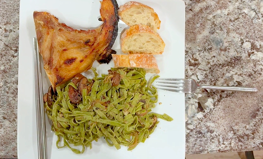

RECIPE
Looking to recreate the dish? Here’s a rundown of our adaptation of the recipe from Eataly.
Tagliatelle Verdi con Ragù di Funghi

Ingredients
- 2 tbsp Extra Virgin Olive Oil
- 2 tbsp Butter
- 1 oz Shiitake Mushrooms (sliced)
- 3 oz White Mushrooms (sliced)
- 3 oz Baby Bella Mushrooms (sliced)
- 1 small White Onion (diced)
- 1 clove Garlic (minced)
- 1 tbsp Fresh Parsley (chopped)
- 1 lb Spinach Tagliatelle
- 1 1/2 cup Grana Padano + extra for garnish (grated)
- 2 pieces Hamachi Kama
- 3 oz Italian Sausage
- Salt
- Pepper
Steps
- Preheat the oven to 400 degrees Fahrenheit.
- Salt the Hamachi Kama and put in oven for 15-25 minutes. Take out once lightly charred.
- Bring a large pot of salted water to boil.
- Heat olive oil and butter in a pan. Once the butter is melted, add the mushrooms and cook for 7-10 minutes. Once golden brown, add the garlic and onion and cook for 5 minutes or until soft. Season with salt and pepper.
- Add tagliatelle to pot and cook until al dente.
- Cook sausage until brown. (Due to dietary restrictions, we kept ours in a separate pan and added to one portion when plating.)
- Add 1/4 cup of water to pan and stir to combine. Remove 1/4 of the mixture and put in food processor or blender. Allow the mixture to cool slightly before blending until smooth. Add more water if necessary. Return the puree to the pan and add parsley.
- Add the cooked tagliatelle to the pan. Add the Grana Padano and mix. Add sausage if wanted and mix.
- Plate your pasta next to a slice of the fish and garnish with more Grana Padano if desired.
- Slice a baguette and toast. Add to plate.
- Enjoy!